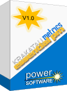
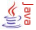
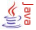
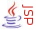
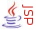

|  |
|
Introducing Krakatau Essential PM,
the latest addition to the Power Software
range of professional software metrics tools.
KEPM/EPM is the product of choice for
IBM Rational ClearCase Managers
and Users/Groups who require to measure or monitor churn metrics,
changed source lines or changed logical lines of source code.
KEPM is independent of version control systems; we have
users on CVS, Subversion and
Microsoft Team Foundation Server measuring SLOC & churn metrics.
|
|
Krakatau Essential PM and Essential Project Manager are fully compatible with Microsoft Windows 7 and Windows 8. |
|
|
|
Power Software manufactures and supports the industry standard
Krakatau Metrics range of professional software metrics tools.
|
|
|
Essential Project Manager exploits PowerSoftware.com's extensive experience of measuring changed, added and deleted SLOC.
Available today for Ada, Assembly, ASP, C#, C/C++, IDL, HTML, Java, JavaScript, JSP, Perl, PL/SQL, Python VB6/VB.NET/VBScript, VDHL & XML.
You can now customise EPM to match the various languages and
file types used in your business; the new XML configuration achieves this quickly and easily.
EPM delivers essential metrics for single projects and difference and changed
metrics across various versions of your source code projects.
View Sample Changed Metrics screens and output.
|
|
News |
16 Sep 2013 Krakatau EPM 2.3.0.0 released with Windows 8 support and bugfixes.
10 Mar 2012 Krakatau EPM 2.2.0.0 released with new language support and an improved license manager.
08 Jul 2011 Krakatau EPM 2.1.0.0 released with new language support.
05 Mar 2010 Krakatau EPM 1.15.1.0 released with Windows 7 support and the new Results Browser - check it out!.
12 Dec 2009 PowerBuilder language support added to Essential PM 1.20.0.0 and Krakatau EPM 1.13.0.0.
22 Aug 2009 New languages - CSS, Ruby & Windows Batch - added to Essential PM 1.19.0.0 and Krakatau EPM 1.12.0.0.
27 Jul 2009 New languages - Fortran, ShellScript & Textfile - added to Essential PM 1.18.0.0 and Krakatau EPM 1.11.0.0.
04 Jun 2008 Microsoft Windows Vista supported added to Essential PM 1.16.005 and Krakatau EPM 1.09.000.
14 Apr 2008 Krakatau Professional (C++) version 2.11.004 released, correcting CBO, SEI MI and LCOM metrics.
28 Jul 2007 VHDL language support introduced to Essential PM 1.15.001 and Krakatau EPM 1.07.001.
|
| Metrics Helpdesk |

Next > |
|


 

 
